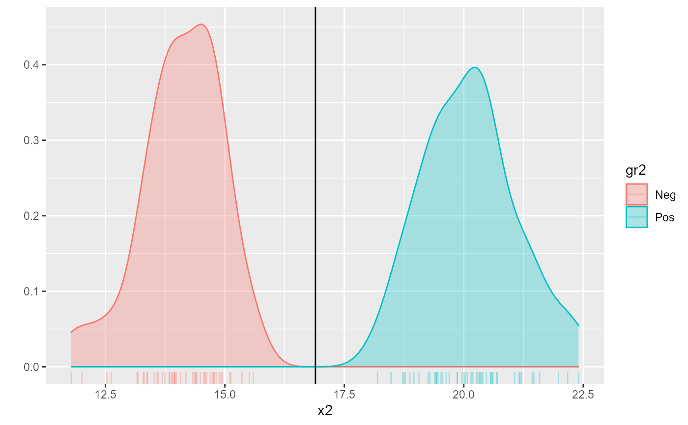
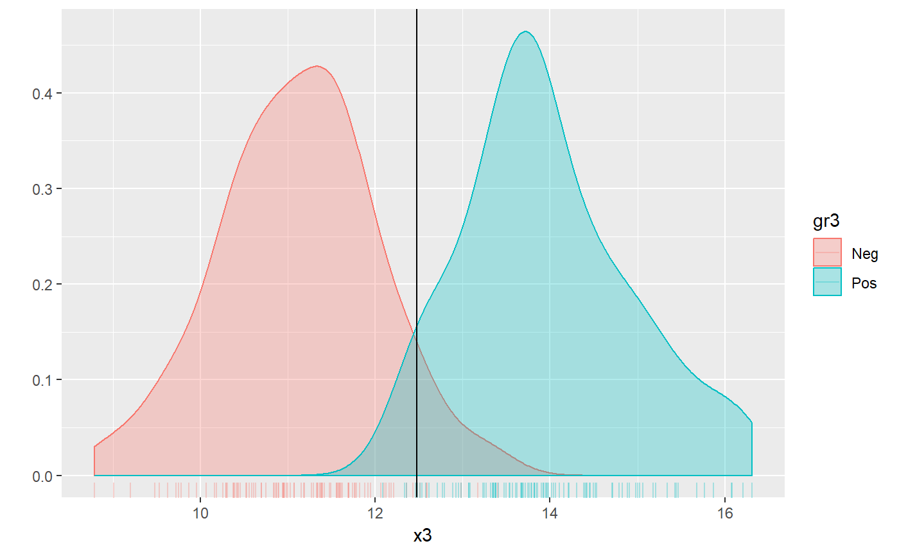

roc_analysis.RdDo the ROC (receiver operating characteristic) analysis and calculate vector of cut-off values and associated number of true positives (TP), false negatives (FN), false positives (FP), and true negatives (TN) as well as performance measures such as sensitivity, specificity, etc.
# S3 method for as_str print(x, ...) # S3 method for roc_df print(x, ..., show_all = FALSE, perf_digits = 2, fmt = "%.3g") # S3 method for roc_opt_result print(x, digits = 3, ...) # S3 method for roc_info print(x, ...) roc_analysis( x, gr, pos_label = levels(gr)[2], pos_is_larger = NULL, optimize_by = "bac", results = "all", ... ) # S3 method for default roc_analysis( x, gr, pos_label = levels(gr)[2], pos_is_larger = NULL, optimize_by = "bac", results = "all", ... ) # S3 method for data.frame roc_analysis( x, gr, pos_label = levels(gr)[2], pos_is_larger = NULL, optimize_by = "bac", results = "all", ... ) # S3 method for matrix roc_analysis( x, gr, pos_label = levels(gr)[2], pos_is_larger = NULL, optimize_by = "bac", results = "all", ... )
| x | ( |
|---|---|
| ... | [!!!] Passed to further methods. |
| show_all | ( |
| perf_digits | ( |
| fmt | ( |
| digits | ( |
| gr | ( |
| pos_label | ( |
| pos_is_larger | ( |
| optimize_by | ( |
| results | ( |
A list (which also inherits from class "roc_result_list")
with three fields: $info, $optimal, $all_results.
$info is a data frame with columns
var_name - empty string reserved for variable name,
neg_label, pos_label labels of negative and positive
groups respectively,
n_neg, n_pos, n_total - number of negative
and positive cases as well as number of cases in total.
$optimal one row from $all_results, which was
determined as having optima threshold (cut-off) value. Sometimes it can be
several rows, if the performance is equally good.
$all_results is a data frame with columns
cutoffs for cutoff values,
tp (number of true positives),
fn (number of false negatives),
fp (number of false positives),
tn (number of true negatives),
... [!!!]
This function is inspired by functions predict and
.compute.unnormalized.roc.curve from ROCR package.
Other functions for ROC:
access_elements,
calculate_performance(),
roc_performance_measures,
roc_predict()
Vilmantas Gegzna
#> [1] -0.6264538 0.1836433 -0.8356286 1.5952808 0.3295078 -0.8204684 #> [7] 0.4874291 0.7383247 0.5757814 -0.3053884#> [1] H H H H H S S S S S #> Levels: H S# Explore the functions roc_analysis(x, gr)#> $info #> var_name n_total n_neg n_pos neg_label pos_label median_neg median_pos below #> 10 5 5 H S 0.1836433 0.4874291 H #> cutoff above #> 0.4084684 S #> #> $optimal #> cutoff tp fn fp tn sens spec ppv npv bac youden kappa auc median_neg #> 0.408 3 2 1 4 0.6 0.8 0.75 0.667 0.7 0.4 0.4 0.6 0.184 #> median_pos #> 0.487 #> #> *The optimal cut-off value selected by: max BAC #> #> $all_results #> cutoff tp fn fp tn sens spec ppv npv bac youden #> 1 Inf 0 5 0 5 0.00 1.00 NaN 0.50 0.50 0.00 #> 2 1.17 0 5 1 4 0.00 0.80 0.00 0.44 0.40 -0.20 #> 3 0.657 1 4 1 4 0.20 0.80 0.50 0.50 0.50 0.00 #> 4 0.532 2 3 1 4 0.40 0.80 0.67 0.57 0.60 0.20 #> ... ... ... ... ... ... ... ... ... ... ... ... #> 8 -0.466 4 1 3 2 0.80 0.40 0.57 0.67 0.60 0.20 #> 9 -0.723 4 1 4 1 0.80 0.20 0.50 0.50 0.50 0.00 #> 10 -0.828 5 0 4 1 1.00 0.20 0.56 1.00 0.60 0.20 #> 11 -Inf 5 0 5 0 1.00 0.00 0.50 NaN 0.50 0.00 #> #> #> attr(,"class") #> [1] "roc_result_list" "list"roc_analysis(x, gr, pos_label = "H")#> $info #> var_name n_total n_neg n_pos neg_label pos_label median_neg median_pos below #> 10 5 5 S H 0.4874291 0.1836433 H #> cutoff above #> 0.2505471 S #> #> $optimal #> cutoff tp fn fp tn sens spec ppv npv bac youden kappa auc median_neg #> 0.251 4 1 2 3 0.8 0.6 0.667 0.75 0.7 0.4 0.4 0.6 0.487 #> median_pos #> 0.184 #> #> *The optimal cut-off value selected by: max BAC #> #> $all_results #> cutoff tp fn fp tn sens spec ppv npv bac youden #> 1 -Inf 0 5 0 5 0.00 1.00 NaN 0.50 0.50 0.00 #> 2 -0.843 1 4 0 5 0.20 1.00 1.00 0.56 0.60 0.20 #> 3 -0.917 1 4 1 4 0.20 0.80 0.50 0.50 0.50 0.00 #> 4 -0.787 2 3 1 4 0.40 0.80 0.67 0.57 0.60 0.20 #> ... ... ... ... ... ... ... ... ... ... ... ... #> 8 0.443 4 1 3 2 0.80 0.40 0.57 0.67 0.60 0.20 #> 9 0.495 4 1 4 1 0.80 0.20 0.50 0.50 0.50 0.00 #> 10 0.31 4 1 5 0 0.80 0.00 0.44 0.00 0.40 -0.20 #> 11 Inf 5 0 5 0 1.00 0.00 0.50 NaN 0.50 0.00 #> #> #> attr(,"class") #> [1] "roc_result_list" "list"# --- Example 2 --- set.seed(1) x2 <- c(rnorm(50, mean = 14), rnorm(50, mean = 20)) gr2 <- gl(2, 50, labels = c("Neg", "Pos")) (roc_rez <- roc_analysis(x2, gr2))#> $info #> var_name n_total n_neg n_pos neg_label pos_label median_neg median_pos below #> 100 50 50 Neg Pos 14.1291 20.1138 Neg #> cutoff above #> 16.89516 Pos #> #> $optimal #> cutoff tp fn fp tn sens spec ppv npv bac youden kappa auc median_neg #> 16.9 50 0 0 50 1 1 1 1 1 1 1 1 14.1 #> median_pos #> 20.1 #> #> *The optimal cut-off value selected by: max BAC #> #> $all_results #> cutoff tp fn fp tn sens spec ppv npv bac youden #> 1 Inf 0 50 0 50 0.00 1.00 NaN 0.50 0.50 0.00 #> 2 22.3 1 49 0 50 0.02 1.00 1.00 0.51 0.51 0.02 #> 3 22.1 2 48 0 50 0.04 1.00 1.00 0.51 0.52 0.04 #> 4 21.8 3 47 0 50 0.06 1.00 1.00 0.52 0.53 0.06 #> ... ... ... ... ... ... ... ... ... ... ... ... #> 98 12.6 50 0 47 3 1.00 0.06 0.52 1.00 0.53 0.06 #> 99 12.3 50 0 48 2 1.00 0.04 0.51 1.00 0.52 0.04 #> 100 11.9 50 0 49 1 1.00 0.02 0.51 1.00 0.51 0.02 #> 101 -Inf 50 0 50 0 1.00 0.00 0.50 NaN 0.50 0.00 #> #> #> attr(,"class") #> [1] "roc_result_list" "list"optimal_cutoff2 <- roc_rez$optimal[1] qplot(x2, fill = gr2, color = gr2, geom = c("density", "rug"), alpha = I(0.3)) + geom_vline(xintercept = optimal_cutoff2)# --- Example 3 --- set.seed(1) x3 <- c(rnorm(100, mean = 11), rnorm(100, mean = 14)) gr3 <- gl(2, 100, labels = c("Neg", "Pos")) (roc_rez3 <- roc_analysis(x3, gr3))#> $info #> var_name n_total n_neg n_pos neg_label pos_label median_neg median_pos below #> 200 100 100 Neg Pos 11.11391 13.82278 Neg #> cutoff above #> 12.47358 Pos #> #> $optimal #> cutoff tp fn fp tn sens spec ppv npv bac youden kappa auc median_neg #> 12.5 96 4 6 94 0.96 0.94 0.941 0.959 0.95 0.9 0.9 0.99 11.1 #> median_pos #> 13.8 #> #> *The optimal cut-off value selected by: max BAC #> #> $all_results #> cutoff tp fn fp tn sens spec ppv npv bac youden #> 1 Inf 0 100 0 100 0.00 1.00 NaN 0.50 0.50 0.00 #> 2 16.3 1 99 0 100 0.01 1.00 1.00 0.50 0.50 0.01 #> 3 16.1 2 98 0 100 0.02 1.00 1.00 0.51 0.51 0.02 #> 4 16.1 3 97 0 100 0.03 1.00 1.00 0.51 0.52 0.03 #> ... ... ... ... ... ... ... ... ... ... ... ... #> 198 9.34 100 0 97 3 1.00 0.03 0.51 1.00 0.52 0.03 #> 199 9.1 100 0 98 2 1.00 0.02 0.51 1.00 0.51 0.02 #> 200 8.9 100 0 99 1 1.00 0.01 0.50 1.00 0.50 0.01 #> 201 -Inf 100 0 100 0 1.00 0.00 0.50 NaN 0.50 0.00 #> #> #> attr(,"class") #> [1] "roc_result_list" "list"optimal_cutoff3 <- roc_rez3$optimal[1] qplot(x3, fill = gr3, color = gr3, geom = c("density", "rug"), alpha = I(0.3)) + geom_vline(xintercept = roc_rez3$optimal[1])